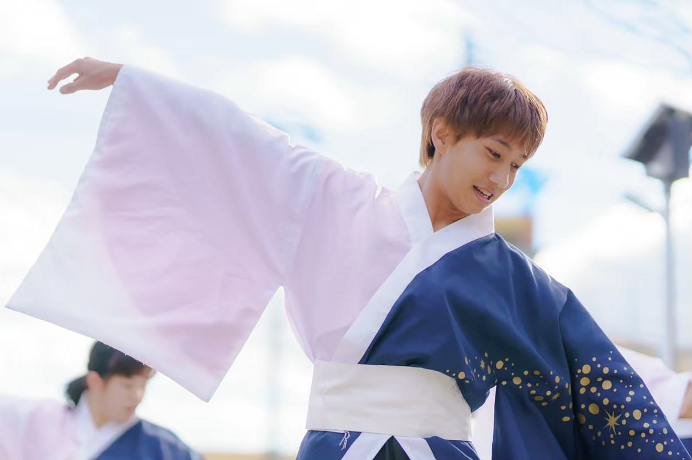

わたしの強み
多様な意見を尊重し、チームをまとめ、成果創出
私の強みは、多様な意見を尊重しながら粘り強くチーム全体をまとめ上げ、具体的な成果へ繋げることです。
よさこい部での経験
大学ではよさこい部に入部しました。入部当初、部内の目標は大会での入賞でしたが、大きく「入賞を目指す人」と「よさこいのお祭りを楽しむ人」に分かれ、活動の方向性にズレが生じ、練習参加率が低下し、雰囲気も悪化していて、これらの改善が課題となっていました。
私はこの状況を打開すべく、2年時に部の代表となりました。約30名の部員と食事をしながら対話を重ね、本音を丁寧に聴き取りました。その結果、方向性は異なっても、「観客に感動を届けたい」という共通の想いがあると気づきました。そこで私は部の目標を「お祭りで賞を獲得すること」から、「観客の心に響く最高の演舞を創り上げること」に再設定し、部員全員で共有しました。さらに部員が主体的に関われるよう、練習メニューを自ら考案する日を設けました。
これらの取り組みの結果、練習の出席率は大幅に上がり、北関東地域最大規模のよさこい祭りである「いばらきよさこい祭り」でよさこい甲子園優秀賞を受賞し、部として初めての受賞を果たすことができました。
この経験は、多様な意見を尊重しながら粘り強くチーム全体をまとめ上げることの大切さを実感させてくれたと共に、強みとしての認識に繋がっています。
教師としての抱負
生徒にも多様なバックグラウンドや考えを持つ生徒がいます。この経験で培った姿勢を活かし、生徒一人ひとりに丁寧に向き合いながら、一体感と主体性を育むクラスづくりをしていきたいと考えています。